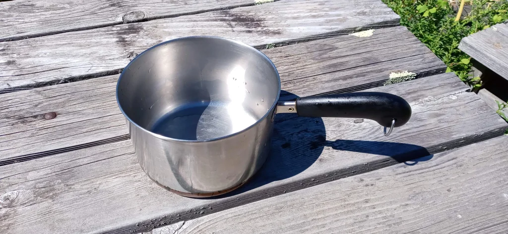

recipe of tasty Potato Men

Mashed potatoes are pretty good. Even the next day. Fried mashed potatoes brings it to a whole nother level. But fried mashed potato men? That's something that sticks with you long after the meal. Expect whoever you make them for to ask for them again. And the options for seasonings and add ins are endless.
The ingredient list
The ingredient list is very short, but definitely experiment a bit. It's hard to go wrong here.
- 2 lbs potatoes
- salt
- 3 eggs
- 1/2 c flour
- bread crumbs
- cooking oil
You'll also need a pot to boil the potatoes in, a pot/pan to fry them in, a source of heat (I use a stove), water, bowl, cookie cutter.